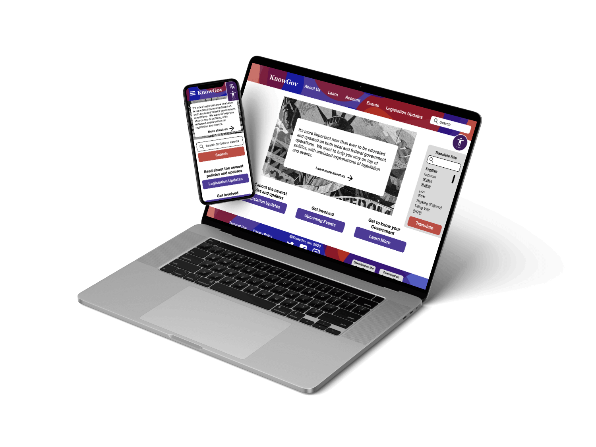
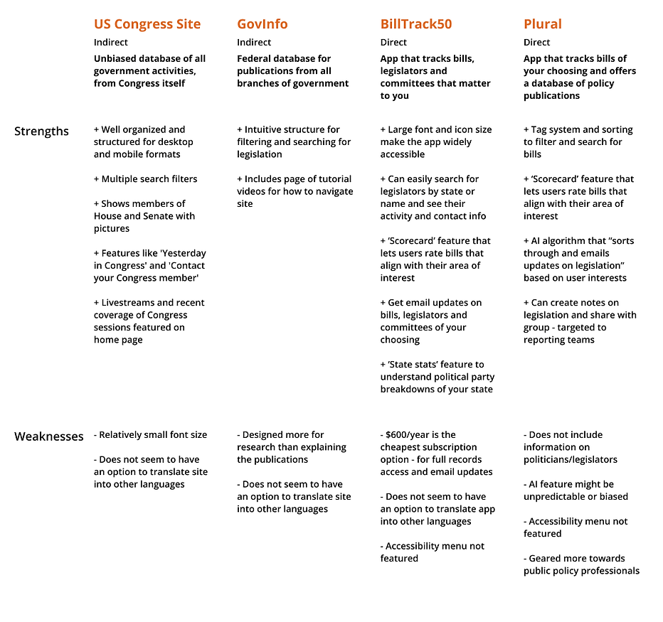
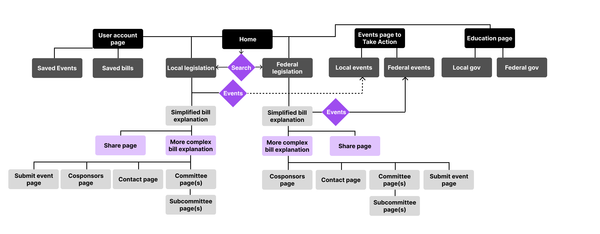
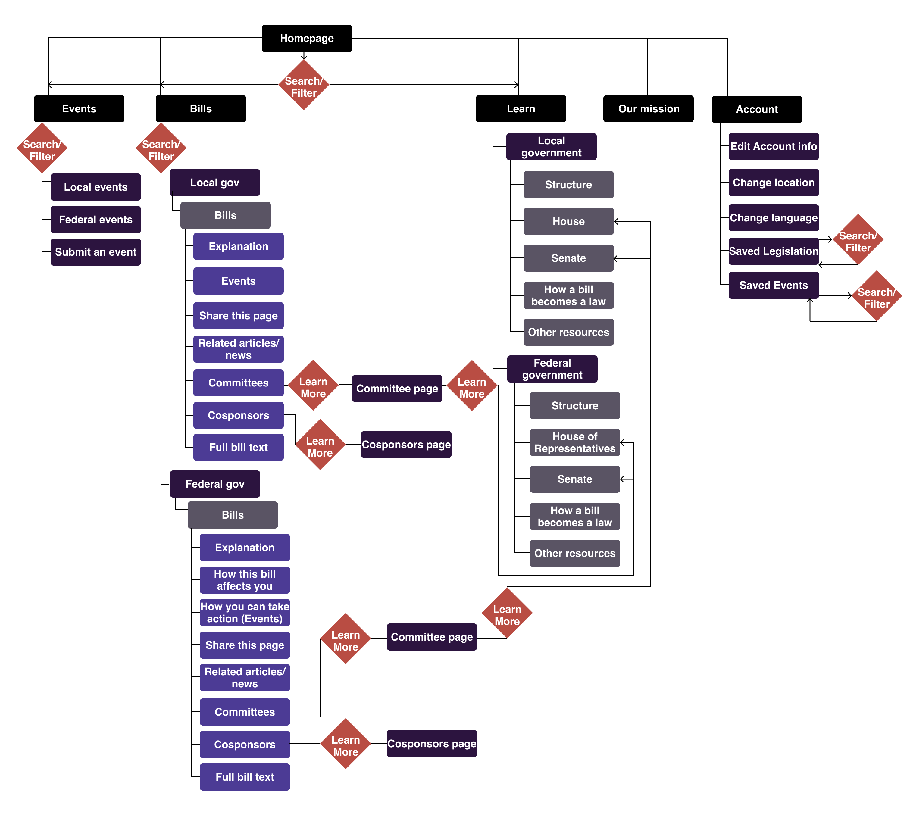

KnowGov
An app and responsive site that delivers unbiased breakdowns of political events and legislation, so users can quickly learn and understand political news and get involved.
Duration
February 2023 - March 2023

An app and responsive site that delivers unbiased breakdowns of political events and legislation, so users can quickly learn and understand political news and get involved.
February 2023 - March 2023
In our current highly polarized political landscape many news sources have turned to opinion-based reporting for shock value and "us versus them" appeal to viewers of specific political orientations. Social media struggles to fact-check the constant influx of posts on government activity, and users fall victim to algorithms that guide them towards extreme corners of the internet.
It can be challenging for the average American to find a truly unbiased source for political news. Federal sites that provide this information often are targeted towards researchers instead of users who want quick explanations of legislative activity.
How might we simplify how users learn about legislation and government?
Research was conducted on competitors who have attempted to solve this issue. It was concluded that most competitor products are targeted toward those working in public policy or in journalism, or users finding primary sources for research. There are not many products that combine tracking legislation and politician activity, and those that do tend to have significant paywalls.
Participants were asked what they would want from a government legislation and events update site. These participants were U.S. citizens who live in rural, suburban and urban areas, and of them there were equal groups of men and women. One popular suggestion from participants was to format the post listings about legislation like social media posts, but without comment sections and suggestion algorithms.
The goals, frustrations and backgrounds of users interviewed were summarized into two user personas.
Age: 24
Education: Bachelors
Goals
Hometown: Rochester, NY
Job: Electrical Engineer
Political Party: Democrat
Frustrations
Beverly is a busy electrical engineer recently out of university. She wants to stay involved in local and federal politics but does not have the time to research each bill. She would like to be informed for when she votes in elections, through a trusted and nonpartisan information source.
Age: 60
Education: Masters
Goals
Hometown: Savannah, GA
Job: Recently retired
Political Party: Republican
Frustrations
Jay is a recently retired professional who wants to inform himself of local/federal government news in his new free time. He wants an unbiased, centralized news source that breaks down proposed bills, shows him how they would impact citizens, and shows him how he can get involved.
With user interests and the problem in mind, features for KnowGov were connected into a sitemap. Users can toggle between local and federal government articles directly on the home page. The 'Education' page teaches users about local and federal government, the 'Events' page has resources to help users get involved in causes they care about, and the 'User Account' page shows a user's saved articles and events.
Crazy Eights was used to brainstorm layouts for the KnowGov mobile app. Different variations on searching and filtering legislation and events articles were designed with current social media apps in mind. Acessibility considerations such as voice-directed scrolling were also added to legislation article deisgns.
Prioritized elements from the paper wireframes were included in the low-fidelity prototype. Each legislation article had a 'simplified' page followed by a 'complex' page, so users can choose whether or not to take a deeper dive into the issue.
Users recommended that the 'simplified' and 'complex' explanations of legislation should be combined into one page, since they found the two-page structure to be more confusing than helpful. A drop-down menu was also suggested for legislation explanation pages, to quickly jump to information sections instead of scrolling down a long page. Titles for sections of the home page were suggested for easier navigation.
For the high-fidelity mobile app prototype, user recommendations such as 'scroll up' buttons, clearer user flows, and descriptions of sections, were included. Larger text sizes were kept from the low-fidelity prototypes after participants found everything easy to read. Accent colors that passed contrast accessibility tests were incorporated.
While it primarily references the structure of the high-fidelity app prototype, the KnowGov website has a navigation menu that directly links to all main pages and uses desktop and tablet screens to its advantage for layouts of elements such as filtering options.
Each page of the site includes a menu to change the site's language and adjust its accessibility options. Elements were redesigned to better fit each device, and text size was increased when possible. The color palette was also adjusted for higher contrast.
Strategies meant to make a user experience more efficient (such as the 'simplified' and 'complex' versions of legislation pages) don't always work that way for users.
Increase text sizes and section sizes, heighten color contrast, and make space for an accessibility menu, then review and lean further into each of these to make a theme more accessible.
Rethink how each page is structured when designing for different devices and use the features of a device to the design's advantage when possible.
Continually compare current designs to competitors' final products to assess whether or not the design includes the 'best' elements of these products.